| Home | Kontakt | Steckbrief |
| Wandern/Trekking |
| Klettern/Klettersteige |
| Kanu |
| Fahrradtouren |
| Rucksack-Reisen |
| Touren mit Kindern |
| Wissenswertes |
| Werbung |
Einmal Nordkap und zurückDank der Geburt unserer Tocher Ida im Jahr 2011 stehen mir im Mai und Juni 2012 acht Wochen Elternzeit zur Verfügung. Meiner Frau und mir ist schnell klar, dass wir die Zeit nicht zuhause verbringen wollen. Beide sind wir Skandinavien Fans und so fangen wir schon Monate vorher mit der Recherche an, was uns in Norwegen und Schweden im Mai an Wetter und Klima erwarten wird.Schnell steht fest, dass wir mit unserem PKW fahren werden und kein Wohnmobil mieten, außerdem wollen wir zelten, wann immer es geht. Der kleine Kombi tschechischer Produktion wird um eine Dachbox und Schneeketten erweitert. Wir hoffen aber, die Schneeketten nicht nutzen zu müssen. Kurz vorher lassen wir noch eine ohnehin fällige Inspektion durchführen. Von den vielen Möglichkeiten, nach Norwegen oder Schweden zu kommen, entscheiden wir uns für die Fähre von Kiel nach Oslo. Wir buchen die Fährüberfahrt online 3 Monate vorher und so bekommen wir mit PKW, 2 Erwachsenen und 2 Kleinkindern eine Innenkabine für 130€. Der Preis ist unschlagbar und da wir eh kein bestimmtes Ziel haben, aber das Nordkap im Hinterkopf nagt, ist Oslo ein guter Ausgangspunkt. Nun planen wir ausgehend von Oslo so langsam eine Route. Für Norwegen stehen uns die beiden Velbinger Reiseführer zur Verfügung, außerdem eine große Skandinavienkarte und natürlich das Internet. Wir wollen von Oslo nach Stavanger und dort auf den Preikestolen klettern. Dann weiter möglichst küstennah auf der E6 hoch in den Norden. Wir halten uns die Option offen, je nach Schneebedingungen nur bis Bodø selber zu fahren und dann auf die Hurtigruten Schiffe umzusteigen. Das soll ohne Voranmeldung gehen. Vom Norkap Richtung Süden wollen wir dann durch Schweden die Inlandsroute nehmen und in Idre einen Zwischenstopp einlegen. Außerdem wollen wir im Glaskogen ein paar Tage verbringen und Stockholm steht auch noch auf der Interessenliste. 28.04.2012 Von Duisburg nach KielNach der gestrigen ersten Doppelgeburtstagsfeier für Ida und ihren Papa beladen wir nun das Auto. Dachbox auf´s Auto. Dort kommen hauptsächlich die leichten Gegenstände, wie Schlafsäcke, Isomatten und Klamotten rein. Dinge also, an die man nicht tagsüber heran muss. Das Zelt, ein Hagloefs Tipi, die Küchenausrüstung und eine Gitterbox mit Lebensmitteln kommen in den Kofferraum. Ein kleiner Buggy kommt in den Fussraum der Kinder und der restliche Stauraum wird mit Windeln, Feuchttüchern, Kinderspielzeug und Kleinkram gefüllt. Erics Laufrad passt leider nicht mehr rein, darauf muss der kleine Mann in den nächsten Wochen also verzichten. Für Recherchen vor Ort kommt ein kleiner Laptop ins Gepäck, und um den laden zu können haben wir einen kleinen 220V Umsetzer unterm Beifahrersitz, da wir nicht wissen, wie häufig wir Zugang zu Strom haben werden. Auf dem Laptop sind eine Menge Kinderfilme, falls es einmal langweilig werden sollte.
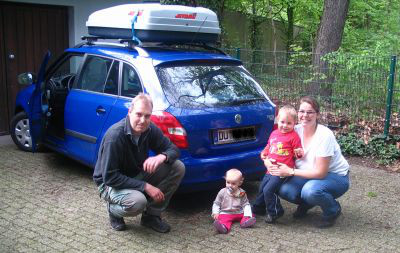
Auto gepackt, es kann losgehen Wir - das sind Carsten, Tanja, Eric (3) und Ida (1) - verlassen Duisburg gegen 17 Uhr und steuern mit Kiel unser erstes Zwischenziel an. Dort verbringen wir die Tage bis zur Fährabfahrt bei den Großeltern. Teil 1 - Der Weg zum Nordkap02.05.2012 Von Kiel nach OsloIn Kiel ist blauer Himmel und Sonnenschein, als wir uns gegen halb elf auf den Weg zum Norwegenkai machen, von wo die Color Line Fähre nach Oslo startet. Das Einchecken verläuft schnell und problemlos, und gegen 13:15 Uhr dürfen wir das Fahrzeug schließlich auf Deck 4 abstellen. Bepackt mit den Klamotten für eine Nacht begeben wir uns auf Deck 10, wo wir unsere gebuchte 2-Bett-Kabine beziehen. Die Kabine ist mit Flachbildfernseher und Duschbad gut ausgestattet, und wir haben nicht das Gefühl, in einer Innenkabine gefangen zu sein.Pünktlich um 14 Uhr legt die Fähre ab, was nicht nur wir vom Sonnendeck aus beobachten wollen. Nach Erreichen der Außenförde gehen wir das Schiff erkunden. Die Spielecke für die Kinder ist ein Riesenflop. Ein bunter Raum, der mit ein paar Stapelpolstern und einem Flachbildschirm ausgestattet ist, auf dem die ganze Zeit irgendwelche englischsprachigen Comics laufen, ist nicht gerade das, was in der Beschreibung der Color Line Reederei zu finden ist. Schade. Das Abendbrot genehmigen wir uns in der Burger- und Sportsbar auf dem Sonnendeck, wo wir für ca. 30 Euro drei Portionen Pommes, zwei Burger und zwei Softdrinks erhalten. Willkommen in Norwegen!
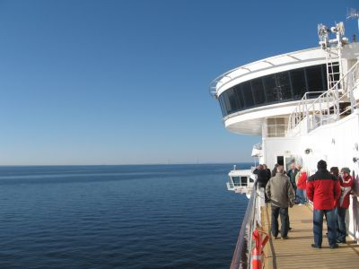
Auf der Fähre Gegen 18 Uhr ist die Store Belt Brücke zu sehen, deren Unterfahrt wir natürlich nicht verpassen wollen. Der Wind ist trotz des schönen Wetters mittlerweile unangenehm kalt und der Aufenthalt an Deck kein Vergnügen mehr, also entschließen wir uns bereits um 19 Uhr, in die Kabine zu gehen. Eric schläft auf der Isomatte neben dem Doppelbett, Ida darf zwischen uns liegen. 3.5.2012 Oslo - KristiansandUm 6.30 Uhr ist die Nacht für uns dank Ida beendet. Wir verspeisen die mitgebrachten Butterbrote und packen unsere Sachen zusammen. Nach einem Kaffee für uns und einem Apfelsaft für Eric begeben wir uns in die Observatory Lounge, um einmal nach vorne aus dem Schiff zu schauen. Da hier aber Verzehrzwang herrscht, gehen wir nach einem kurzen Rundumblick wieder hinunter zum Sonnendeck und dann aufs Achterdeck, wo wir in der Morgensonne den Oslofjord auf uns wirken lassen können.Noch bevor das Schiff angelegt hat, müssen wir aber bereits beim Auto sein, was mit Buggy und voll bepackt eine logistische Herausforderung wird, da die Aufzüge zu den Autodecks ziemlich überfüllt sind. Das Schiff hat schon angelegt, als wir endlich am Fahrzeug sind. Wir reihen uns in die Schlange der Fahrzeuge ein, die nichts zu verzollen haben. Nach einer weiteren halben Stunde Wartezeit fragt uns eine blonde Zollbeamtin, was wir denn in Norwegen vorhätten, ob wir angeln wollten und wie viele Zigaretten und Alkohol wir dabei hätten. Nach wahrheitsgemäßer Beantwortung der Fragen lässt sie uns ohne Passkontrolle einreisen, wir sind endlich da: HEJ NORGE! Wir lassen Oslo, das wir beide schon kennen, rechts liegen und fahren direkt in Richtung Kristiansand. Obwohl wir zügig vorankommen, brauchen wir trotzdem rund 5 Stunden für die Strecke, die mit Blitzanlagen gespickt ist und aus unzähligen mautpflichtigen Abschnitten besteht. Ein neu ausgebautes Teilstück der Autobahn verkürzt die Anreise um eine halbe Stunde. Unterwegs checken wir noch, welchen Campingplatz wir ansteuern wollen und entscheiden uns für das im Reiseführer empfohlene Kristiansand Feriesenter. Kristiansand empfängt uns mit warmen Temperaturen und Sonnenschein, doch die nur mit Bikini bekleideten Mädchen, die wir im Kristiansand Feriesenter sehen, übertreiben es unserer Meinung mit dem Sommerfeeling dann doch etwas. Wir dürfen uns unseren Zeltplatz auf dem mit Dauercampern überfüllten Platz selbst suchen und finden einen schönen Platz direkt am Wasser.
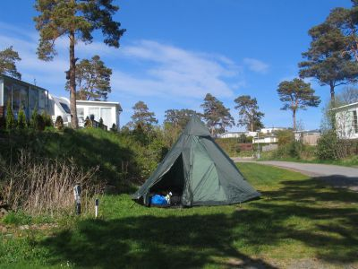
Erster Campingplatz in Norwegen Die sanitären Anlagen sind sehr sauber und zu unserer Begeisterung gibt es einen Familienwaschraum mit Kindertoilette, Babybadewanne und Kinderdusche. Leider ist der eigentlich schöne Spielplatz mit Riesen-Hüpfkissen sehr verdreckt. Hoffentlich nur ein Vorsaisonsproblem. 4.5.2012 Kristiansand - JørpelandNach einer ruhigen Nacht packen wir alles zusammen und brechen in Richtung Stavanger auf, denn wir wollen zum Preikestolen am Lysefjord. Es ist sonnig, und wir sind guter Dinge. Die Fahrt zieht sich endlos, und wir merken, dass 300 km Entfernung nicht gleichbedeutend mit 3 Stunden Fahrt sind. Nach rund 5 Stunden und zwei Fährüberfahrten erreichen wir schließlich Jørpeland, wo wir für zwei Nächte unser Zelt aufschlagen wollen.
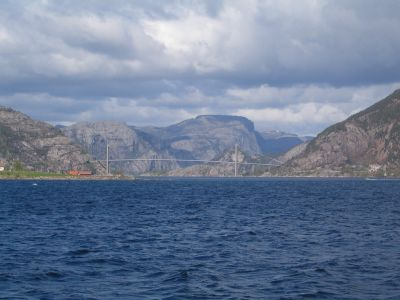
Fährüberfahrt Der vom Reiseführer empfohlene Campingplatz Camping Solvik liegt sehr schön am Wasser mit Blick hinüber nach Stavanger, aber von dem beschriebenen Spielplatz ist nichts zu sehen. Die Waschräume sind nicht gesäubert, und auch der Aufenthaltsraum ist etwas heruntergekommen, dafür hat uns die Campingplatzbetreiberin nur 100 NOK pro Nacht in Rechnung gestellt, da es noch Vorsaison ist. Der Aufenthaltsraum ist geheizt und neben Kochgelegenheiten zudem mit einer Sitzgruppe ausgestattet. Und da wir die einzigen Camper hier sind, können wir den Raum komplett für uns nutzen. So ist es bei den niedrigen Temperaturen und dem starken auflandigen Wind gut auszuhalten. 5.5.2012 PreikestolenHeute wollen wir auf den Preikestolen. Der Himmel zeigt sich uneins, dunkle Wolken wechseln sich mit sonnigen Abschnitten ab. Als wir vom Campingplatz losfahren, beginnt es zu schneien. Das kann ja heiter werden. Zum Parkplatz des Preikestolen sind es rund 8 km, der Parkplatz kostet mittlerweile 100 NOK und Alternativen zum Abstellen des Fahrzeugs gibt es nicht. Wir ziehen uns warm an, da wieder dunkle Wolken aufziehen, und auch die Kinder werden doppelt und dreifach eingepackt, da sie sich in den Kraxen nicht bewegen und schneller auskühlen können. Ich nehme Eric auf die Schultern, Tanja nimmt Ida, und dann geht es los.Der Aufstieg soll laut Informationstafel rund 2 Stunden dauern. Das erste Stück ist bereits eine Herausforderung, da es steil bergan geht. Zwischendurch gibt es Stellen an denen es über große Felsblöcke geht. Insgesamt kein einfacher Weg. Wir erreichen trotzdem das Plateau und machen dort ein paar Fotos von uns und dem Lysefjord. 1999 ist mir der Aufstieg leichter gefallen, aber da hatte ich kein 20kg schweres Kind auf dem Rücken.
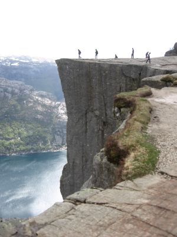
Der Preikestolen Der Rückweg zieht sich, es gibt noch einige Schneeschauer, aber zurück am Auto knallt die Sonne vom Himmel. Was interessant zu beobachten war bei dieser Wanderung: Menschen mit falscher Ausrüstung klettern über Felsblöcke, dass einem Angst und Bange wird. Auf dem Rückweg zum Campingplatz kaufen wir noch schnell im Ort ein, und wir sind dankbar, die einzigen Campinggäste zu sein, denn wir können gemeinsam die Damendusche nutzen und uns dort aufwärmen. Der Abend ist sehr kurz, und wir sind froh, in die Schlafsäcke sinken zu können. 6.5.2012 Jørpeland - RøldalGegen halb acht wachen wir allmählich auf und schauen ins helle Zelt. Es regnet kurz, wie schon die halbe Nacht immer mal wieder. Als wir das Zelt öffnen, sehen wir, dass vor dem Eingang Schneegraupel liegt. Das verspricht heiter zu werden, denn wir sind ja noch weit im Süden. Wir frühstücken im Aufenthaltsraum, in dem drei spät angereiste Franzosen geschlafen haben. Ihnen war es mit ihren Quechua Schlafsäcken im Zelt zu kalt gewesen.Um 10 Uhr haben wir alles verstaut und starten gen Norden. Die Fahrt über die RV 13 ist fast durchgängig spektakulär, steile Felswände, Seen, Schafe, Schneeschauer begleiten uns. Das erste Etappenziel ist Hjelmeland, wo wir auf die Fähre nach Nesvik warten müssen. Die RV 13 schlängelt sich an hohen Felswänden entlang, wir passieren zig Tunnel und fahren entlang einer Seenlandschaft nach der anderen. Atemberaubende Landschaft. Die Kinder schlafen derweil, so dass wir unsere Ruhe haben und geniessen können. Je näher wir Röldal kommen, umso verschneiter wird es. Die Berghänge und mittlerweile auch die Straßenränder sind noch schneebedeckt. Wir entscheiden uns, in Röldal auf den Seim Campingplatz zu gehen und eine Hütte zu nehmen, denn bei Tagestemperaturen um die 5 Grad wird die Nacht garantiert lausig kalt. Die Vermieterin ist sehr nett und erklärt in unfallfreiem Englisch, dass das Wetter für diese Jahreszeit verrückt spielt. Dieser Schneeeinbruch war nicht zu erwarten, sei aber zur Zeit in ganz Norwegen so. Das verspricht ja einiges für die Weiterfahrt.
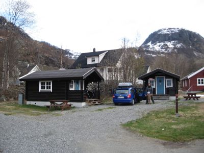
Unsere erste Hüttenübernachtung Die Hütte kostet uns 400 NOK. Da bereits eine Nacht zuvor jemand hier genächtigt hat, ist sie noch warm. Bei Sonnenschein räumen wir die geräumige Hütte ein, und dann beginnt das Schneetreiben. Es war die richtige Entscheidung. Zum verspäteten Mittag gibt es eine Buchstabensuppe - Eric kann schon mal lesen lernen - und zuvor noch den Rest chinesische Reispfanne vom Vortag. Ein Ausflug zum Spielplatz und zum Röldalsee bleibt für den Nachmittag die einzige Attraktion, denn immer wieder einsetzender Schneefall lässt nicht mehr zu, also bleiben wir in der Hütte und vertreiben uns mit den Kindern und der Spielebox die Zeit. 7.5.2012 Röldal - BergenNach dem Frühstück packen wir das Auto von Grund auf neu und säubern die Hütte, ehe wir gegen 10 Uhr los fahren.Der Weg führt uns zunächst ein Stück zurück auf der E 139 und durch einen langen Tunnel, der sich in Kurven innerhalb des Berges hinaufschlängelt. Es ist kalt und schneereich, aber sonnig. Auf der E 13 nach Odda passieren wir die Doppelwasserfälle "Latefoss", wo wir einen Fotostopp einlegen. Danach geht es weiter gen Norden, durch Odda hindurch auf der Ostseite des Sörfjords entlang. Die Hardangervidda ist allseits präsent mit ihren schneebedeckten Kuppen, doch hier unten blühen schon die Obstbäume, für die diese Gegend bekannt ist. Kurz vor Eidfjord sehen wir das neue Brückenbauwerk, dass Brimnes mit Bruarvik verbinden soll, es soll im Juni 2013 fertig gestellt sein. Wir müssen daher noch die Fähre nutzen, die uns direkt vor der Nase davon fährt. Also müssen wir eine Stunde warten, dafür stehen wir als erste in der Schlange.
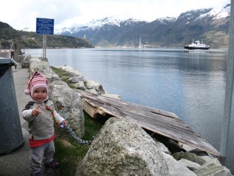
Noch fährt die Fähre aber im Hintergrund wird schon die Brücke gebaut Die Überfahrt nach Bruarvik dauert gerade mal 10 Minuten, so dass wir um 13 Uhr auf der anderen Seite endlich in Richtung Westen weiterfahren können. Die RV 13 geht später in die E 16 über, und wir durchfahren den 7 km langen Villaviktunnel, der zur Abwechslung mal keine Maut kostet. Was die diversen kleineren Mautbeträge angeht haben wir uns dagegen entschieden, unsere Kreditkartendaten anzugeben und uns anzumelden. Wir zahlen die Kleckerbeträge auch nicht vor Ort, sondern warten später zuhause auf die Post vom Inkassounternehmen. Die kam dann auch nach zwei Monaten in Form von diversen Einzelbriefen. Hinter Voss wird das Wetter schlechter, bis wir schließlich durch strömenden Regen fahren. Die Kinder werden unruhig, und wir sind froh, als wir endlich kurz vor Bergen den Campingplatz Lone Camping erreichen. Es ist mit 4,5 Grad doch etwas frisch und gemeinsam entscheiden wir, dass wir wieder eine Hütte für die nächsten 2 Nächte buchen wollen. Die Dame an der Rezeption, die zur Shell-Tankstelle gehört, bietet uns ihre billigste Hütte an, die mehr als spartanisch ausgestattet ist. Zwei Doppelstockbetten, ein Tisch mit 4 Holzstühlen und eine Küchenzeile ohne fließendes Wasser. Keine Töpfe, Geschirr oder Besteck! Also müssen wir uns mit unserer Ausrüstung aushelfen. Wasser holen wir per Kanister vom Sanitärgebäude. Nach dem Einrichten gehen wir einkaufen. Der Supermarkt befindet sich direkt neben der Tankstelle und ist relativ günstig, auf der anderen Strassenseite gibt es zudem noch einen Spar-Markt. Der Spielplatz direkt neben der Hütte und der kleine Zoo mit Kaninchen und Ziegenbock haben es Eric angetan, aber auch das Steine Werfen in den See, den wir von unserem Küchenfenster aus sehen können, findet er spitze. Mittlerweile spüren wir auch die länger andauernden Tage, es dämmert erst gegen 22 Uhr. 8.5.2012 BergenDer Morgen begrüßt uns mit strahlendem Sonnenschein, und wir zweifeln, ob die Entscheidung, eine Hütte zu buchen, wirklich die Richtige gewesen ist. Egal. Wir packen die Sachen für einen Tagesausflug zusammen und fahren nach Indre Arna, wo wir das Auto am Bahnhof kostenlos abstellen und mit der Regionalbahn nach Bergen fahren können. Die Tickets bekommen wir problemlos am Automaten und sind zwei Minuten später schon im Zug. Die Fahrt ist unspektakulär, da der Zug direkt nach Abfahrt aus Arna in einen Tunnel einfährt und erst kurz vorm Bahnhof Bergen nach nur rund 10 Minuten wieder aus ihm herausfährt.Entspannt verlassen wir den Zug und lassen Ida und Eric erst einmal laufen. Auch in Bergen scheint die Sonne, so dass der Weg vom Bahnhof zum Hafen angenehm und freundlich wirkt. Unser erster Weg führt uns zur Touristeninformation, die sich in einem modernen Würfelbau am Hafen präsentiert. Wir schauen nach Broschüren, die uns für die Weiterreise gen Norden hilfreich sind, und nutzen das freie WLAN. E-Mails abrufen und ein kurzes Lebenszeichen nach Deutschland schicken klappen problemlos.
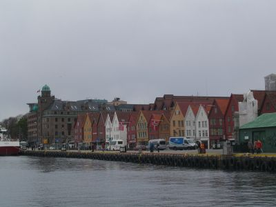
Die Bryggehäuser Danach machen wir uns auf zu den Holzhäusern von Brygge. Ein alter Norweger fragt uns, woher wir kommen, und erzählt uns von der Geschichte Brygges, dass es ursprünglich Deutsches Brygge geheißen habe und im zweiten Weltkrieg nur knapp der Zerstörung durch Luftangriffe entgangen ist. Dann lässt er uns die Altstadt allein erkunden und wendet sich anderen Touristen zu. Von Brygge geht es weiter zur Rosenkrantzfestung. Mittlerweile hat sich der Himmel bezogen und es wird unangenehm kalt. Während wir uns die Festung anschauen, geraten wir unter Salut-Beschuss. Im Hafen läuft ein Schiff der norwegischen Marine ein, und auf einem Steg versammelt sich die Veteranenelite der norwegischen Armee. Wir ziehen weiter nach Bergen hinein und kehren auf den Tipp einer norwegischen Mutter hin im Einkaufszentrum Galeriet ein. Das Selbstbedienungsrestaurant hat einen eigenen Kinderspielraum, der zwar Spielzeugtechnisch nicht viel hergibt, aber zum Herumtoben für unsere Kids vollkommen ausreicht. Wir kommen schnell ins Gespräch mit zwei Vätern, deren 11 Monate alte Söhne mit Ida und Eric spielen. Als wir das Einkaufszentrum verlassen, beginnt es zu regnen. Typisch Bergen! Wir entscheiden uns, die Bahn zurück nach Arna zu nehmen. Da wir die Rückfahrttickets bereits in der Tasche haben, können wir in den nächsten Regionalzug springen, die halbstündig fahren. In Arna gießt es Bindfäden, und nach einem kurzen Einkauf direkt neben dem Bahnhof fahren wir zum Campingplatz, um die Kinder in der Hütte spielen zu lassen. Es ist so stürmisch und regnerisch geworden, dass nur in kurzen Regenpausen an Klogänge oder Spielplatz zu denken ist. Als die Kinder endlich um 21 Uhr schlafen, planen wir die weitere Fahrt. 9.5.2012 Bergen - StrynAm nächsten Morgen gießt es immer noch! Wir gehen mit den Kindern in den Familienwaschraum und duschen, ehe wir frühstücken und dann das Auto beladen. Um 10 Uhr kommen wir vom Platz. Die Landschaft unter den schweren Regenwolken begeistert uns immer mehr. Zur Mittagszeit machen wir einen Stopp in Förde, wo wir in einem großen Einkaufszentrum einen Kaffee und belegte Brote genießen, während die Kinder mit einer Holzeisenbahn spielen, die neben dem Cafe aufgebaut ist. Da der Tag noch jung ist und der Ort wenig einladend auf uns wirkt, verlassen wir Förde bereits nach einer Stunde wieder und fahren weiter nach Stryn. Der Himmel reißt auf und die Sonne beleuchtet die spektakuläre Landschaft. Es macht Spaß, hier zu fahren und zu schauen.In Stryn suchen wir zunächst den Campingplatz und geraten auf der RV 15 in eine große Baustelle. Hier fällt uns ein Schild auf, das den Autofahrern mitteilt, dass die Strecke nach Geiranger gesperrt sein soll und der Tunnel zur E6 nur vier Mal am Tag passiert werden kann. Da hilft nur eins: Die Touristeninformation. Nachdem wir endlich Stryn Camping im Ortszentrum gefunden und in einem Nachbarhaus 150 NOK für die Zeltübernachtung bezahlt haben, gehen wir einkaufen und suchen die Touristeninformation auf, die leider schon geschlossen ist. Als wir einen kleinen Spielplatz gefunden haben und die Kinder spielen lassen, beginnt es zu regnen, so dass wir zügig zurück zum Campingplatz gehen. Im Gemeinschaftshaus, in dem sich die Toiletten und Duschen befinden, gibt es eine volleingerichtete Küche und Eßplätze, allerdings ist es noch sehr unordentlich. Hier richtet man sich erst allmählich auf die kommende Saison ein.
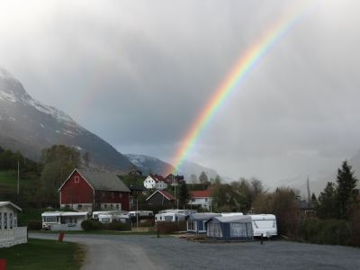
Stryn Camping 10.5.2012 Stryn - ValsöyfjordDie Nacht ist teilweise stürmisch gewesen, aber morgens ist es trocken. Wir frühstücken draußen auf der Picknickbank in der Morgensonne. Dann geht es zur Touristeninfo, wo uns mitgeteilt wird, dass die Straße nach Geiranger tatsächlich gesperrt ist. Um nach Trondheim zu kommen, empfiehlt uns die nette Dame die Straße zur E6, die aber nur 4 mal am Tag für den Bus und Kolonnenverkehr geöffnet ist, die erste Öffnung hätten wir gerade verpasst, die nächste wäre erst gegen 13 Uhr. Wieder am Auto schauen wir in die Karte und entscheiden uns, die Route gen Molde zu nehmen. Damit fällt für uns der Geirangerfjord und der Trollstigen aus.
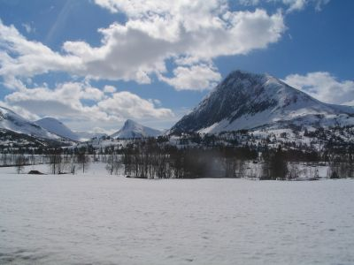
Horningdal Der Tag ist wunderschön. Blauer Himmel, frühlingshaft warm, und die RV60 führt durch Horningdal am Horndalsrokken vorbei. Ein Berg, der von seiner Form her hier garnicht her passt. An weiteren tief verschneiten Bergen vorbei geht es nach Hellesylt. Hier treffen wir auf den Geirangerfjord, haben allerdings nicht die spektakuläre Sicht wie von Geiranger aus. In Stranda nehmen wir die Fähre nach Liabygda. Wir machen Mittagspause an einem Rastplatz mit Bewirtschaftung. Eric bekommt ein Eis, Ida ihre Milch und wir sehen auf der anderen Fjordseite einen einsamen Bergbauernhof (Ytste Skotet), der ziemlich unerreichbar ausschaut. Wir fahren auf der 650 nach Sjøholt und von dort auf der E39 zum Fähranlegen nach Vestnes. Die Fähre bringt uns hinüber nach Molde, das in strahlendem Sonnenschein vor uns liegt. Hier müssen wir mal wieder tief ins Portemonnaie greifen beim Tanken. Umgerechnet 2,03€ pro Liter, da fährt man gerne ruhig und langsam. Wir entscheiden uns gegen eine Übernachtung in Molde, sondern für den Campingplatz auf halber Strecke nach Trondheim. Dieser soll erst ab dem 15ten Mai geöffnet haben, aber wir gehen das Risiko ein. Vorher müssen wir noch einmal mit der Fähre von Halsa nach Kanestraum fahren. Beim Campingplatz wird gebaut, und die Betreiberin erklärt uns freundlich und zuvorkommend, dass wir gerne für 150 NOK dort zelten dürfen. Der Abend ist mild und ruhig. Wir kochen im Gemeinschaftshaus, waschen unsere Wäsche für 40 NOK, der Trockner ist gratis, und genießen den Abend am ruhigen Fjord, an dessen Ufer der kleine Campingplatz liegt.
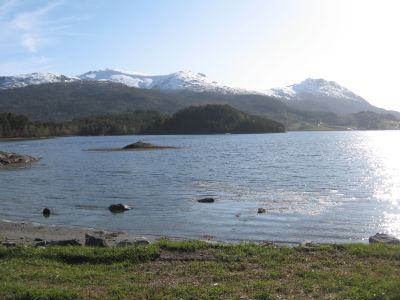
Campingplatz mit eigenem Fjord Bis auf zwei später anreisende Wohnmobilisten haben wir den Platz für uns alleine. 11.5.2012 Valsöyfjord - SteinkjerMorgens ist es bedeckt, und das Zelt ist relativ feucht. Wir packen alles zusammen und fahren wie immer gegen 10 Uhr los. Als wir auf der Straße sind, fängt es an zu regnen. Je näher wir Trondheim kommen, umso schlimmer wird es. Wir wollen bei dem Wetter dann doch keine Stadtbesichtigung machen. Also lassen wir Trondheim links liegen und bleiben auf der Umgehungsstraße Richtung Steinkjer. Dann sehen wir einen IKEA und entscheiden uns spontan, dort zu Mittag zu essen. Die Kinder können sich austoben, wir können in Ruhe Kaffee trinken und etwas essen. Nach einer Stunde in einem der ruhigsten IKEA-Restaurants, das wir je erlebt haben, fahren wir weiter. Die E6 hinauf gen Norden.In Steinkjer schauen wir uns erst den stadtnahen Campingplatz an, der bei einer Schule liegt. Dieser gefällt uns nicht wirklich, also fahren wir weiter zum etwas nördlich gelegenen Campingplatz Föllingstua. Der Platz hat viele feste Stellplätze und wir sollen neben den Schaukeln zelten, obwohl es neben dem Haupthaus schöne ebene Stellplätze mit Blick auf den See gibt. Leider ist auch der Gemeinschaftsraum abgeschlossen, und die Kochmöglichkeit stellt eine Küchennische vor dem Damenklo dar, so dass wir den Trangia rausholen und am Zelt kochen. Währenddessen kommen immer mehr Wohnwagenbesitzer, für die unsere Kochaktion neben dem Auto sehr interessant zu sein scheint, denn wir werden neugierig beäugt.
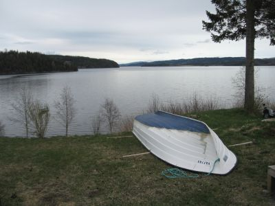
Föllingstua Camping Es ist frisch und windig, aber trocken. Trotzdem verziehen wir uns schon gegen 19 Uhr ins Zelt, um nicht mehr dem Wind ausgesetzt zu sein und auszukühlen. Es brist auf, bis es richtig stürmisch ist. Zum Glück lassen sich die Kinder von dem Sturm nicht beeindrucken und schlafen tief und fest, wir dagegen schauen sorgenvoll aufs Zelt, das ächzt und knackt. Gegen Mitternacht ziehen wir noch mal ein paar Spannschnüre nach, dann steht alles sicher. 12.5.2012 Steinkjer - MosjöenUm 7 Uhr stehen wir auf, frühstücken wegen des Windes und sehr zur Freude der Kinder im Zelt und packen dann zusammen. Bevor der Campingplatz so richtig aufwacht, haben wir ihn schon verlassen. Der Weg führt uns auf der E6 zu unserem ersten Ziel Mosjöen, dort wollen wir entscheiden, ob wir noch nach Mo i Rana weiterfahren wollen. In Grong tanken wir vorsorglich, da der Reiseführer vor dem einsamen Teilstück zwischen Grong und Mosjöen warnt, und kaufen gleich noch fürs Wochenende ein.
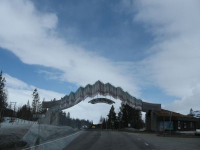
Das Tor zum Norden Es wird kälter, Schnee liegt links und rechts der Straße, und die Seen sind teilweise noch zugefroren. Nach 4 Stunden erreichen wir den Campingplatz in Mosjöen. Wir entscheiden uns, in Mosjöen zu bleiben, da in Mo i Rana laut Campingführer noch kein Platz geöffnet hat. Leider hat die Rezeption erst ab 16 Uhr geöffnet, so dass wir die Zeit bis dahin in dem kleinen Städtchen vertreiben müssen. Das Shopping Centre in Mosjöen ist unsere Rettung, als ein Schneegestöber über die Stadt hereinbricht. Dort findet zum gleichen Zeitpunkt eine Aktion der örtlichen Gesundheitsbehörde zur gesunden Ernährung statt, und die Kinder greifen ein paar frische Obststücke ab. Dann schlendern wir noch durch den übersichtlichen Ort, dessen Sehenswürdigkeiten alle noch im Dornröschenschlaf liegen, aber dafür bieten uns ein paar zukünftige Schulabgänger, sogenannte Russen, neben A Capella Gesang auch einen Nacktlauf bei winterlichen Temperaturen. Die spinnen, die Norweger. Wir buchen eine schlichte, einfache Hütte für 450 NOK, haben dafür aber die Dusche und Waschkarte direkt dabei. Es gibt wieder einen Familienwaschraum mit Kinderklo, und wir machen Familienduschen und danach noch große Wäsche. Bei Grog und Chips lassen wir den Abend ausklingen, während draußen die Schneeflocken tanzen. 13.5.2012 Mosjöen - Polarkreis - FauskeWir wachen wieder um sieben auf. Es regnet bzw. nieselt immer wieder. Die E6 ist doch abwechslungsreicher, als es in den Reiseführern beschrieben ist, und wir genießen den Blick aus den Autofenstern. In Mo I Rana machen wir eine Stunde Mittagsstopp, obwohl die Stadt schläft. In der sehr überschaubaren Fußgängerzone gibt es einen kleinen Spielplatz, der sogar von einigen Kindern in Erics und Idas Alter bespielt wird. Wir genehmigen uns einen Kaffee und die Kinder können spielen. So haben wir uns das eigentlich häufiger vorgestellt.Dann geht es nach einem kleinen Snack ... Ostepölse in Brot ... weiter nach Norden. Je näher wir dem Polarkreis kommen, umso verschneiter wird es. Aber das Polarkreiszentrum liegt auch auf rund 700müNN. Hier oben pfeift uns der Wind um die Ohren, der Schnee liegt teilweise um die 2,5 m hoch.
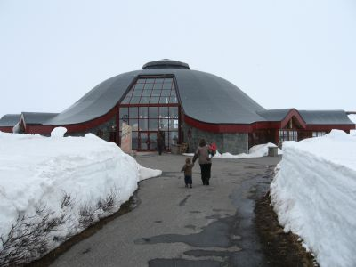
Am Polarkreis Im Shop des Polarcirkelcenters wird gerade Inventur gemacht. Unzählige kleine Trolle stehen auf dem Boden. Wir schreiben schnell zwei Karten an die Großeltern, ehe wir uns auf den Weg nach Fauske machen. Als es Richtung Tal geht, verschwindet der Schnee allmählich. Unterwegs sehen wir ein paar Rentiere, die schnell fotografiert werden müssen. Eric ist ganz begeistert. In Fauske suchen wir den Campingplatz, der auf einem Hügel liegt und windumtost ist. Eine nette Hütte für 600 NOK, inkl. fließend warm und kalt Wasser. Hier fühlen wir uns wohl. Abends geht es an die weitere Planung, denn die Lofoten stehen an. Wir entscheiden, dass wir erstmal nach Bodö fahren, um die Fährverbindungen nach Moskenes zu klären. Heute Abend weht es ziemlich kräftig um die Hütte, und auch der Himmel ist mit dunklen Wolken verhangen. Wir hoffen auf Wetterbesserung mit weniger Wind und wieder ein paar sonnigen Abschnitten. 14.5.2012 Fauske - Bodö - Ramberg/LofotenWir stehen früh auf, und es weht immer noch ziemlich heftig. Um halb zehn sind wir abfahrbereit. Der Blick zum Himmel lässt uns nachdenklich werden, denn wenn es so weht und nach Unwetter aussieht, möchte ich eigentlich nicht für 4 Stunden auf einer Fähre vor den Lofoten dümpeln. Aber wir fahren erstmal nach Bodö, wo wir das Auto in Reihe 1 des Fähranlegers hinter einem Lastzug abstellen. Am Terminal ist niemand, so dass wir auch nicht fragen können, wie es weitergeht. Da kommt die Fähre aus Moskenes zurück. Wir fragen den Mitarbeiter, der erklärt, dass wir richtig stehen und die Tickets an Bord kaufen müssen.Also gehen wir mit den Kindern erstmal in die Stadt und suchen die Touristeninformation. Zu erst finden wir einen Schalter der Fährgesellschaft, wo wir nachfragen, wie das mit der Fährpassage läuft. Der Norweger hinter dem Schalter erklärt freundlich, dass wir, falls wir nicht vorgebucht hätten, abwarten müssten, ob wir mitgenommen werden. Da wir aber schon das Auto dort abgestellt hätten, hätten wir wohl gute Chancen. Ein Ticket könne er uns aber nicht verkaufen, da es am selben Tag nicht ausgestellt werden könne. Zur Unterkunft auf den Lofoten könne er nichts sagen, da er noch nie dort gewesen sei, er würde seine spärliche Freizeit in wärmeren Gefilden verbringen. Dann gehen wir zur Touristeninformation, wo uns auch nicht wirklich weitergeholfen werden kann. Die junge Frau gibt uns eine Broschüre über die Lofoten mit und erklärt, wir sollten vorher anrufen, um zu klären, ob wir eine Übernachtung bekommen könnten. Unser Weg führt uns danach in die überdachte Einkaufstraße, wo Eric ein Mittagessen bei Burger King einfordert. Es gibt für jeden ein Menü, und im Keller des Restaurants gibt es sogar einen Kinderspielraum und einen Tisch für Kinder, an dem Eric genüsslich seine Nuggets und Pommes verspeist. Danach gehen wir einkaufen und zurück zum Auto. Die Reihe hinter uns füllt sich, und am Kai nebenan liegt die Nordkap, das Hurtigrutenschiff, das eine andere Option wäre, auf die Lofoten zu kommen. Das fährt aber schon um 15 Uhr ab, unsere Fähre geht erst um 16.30 Uhr. Als es endlich zum Einchecken geht, sind wir das erste Auto, das an Bord fahren darf. Unsere Besorgnis, nicht mitzukommen, war vollkommen unbegründet. In der Hochsaison kann das ohne Vorbuchung aber ganz anders aussehen!
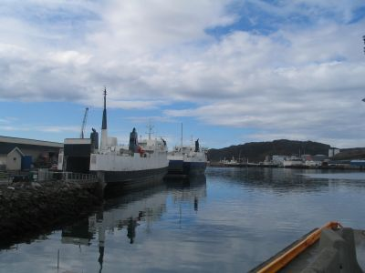
Unsere Fähre auf die Lofoten Wir nehmen einen Rucksack mit Essen und Trinken mit hoch und suchen uns einen Platz mit Tisch. Es gibt einen Spielraum für Kinder, allerdings ohne Spielsachen. Dafür einen Fernseher mit DVD-Player und mehrere DVDs. Eric schaut zunächst Kung-Fu Panda und danach Robin Hood von Disney. Ihm ist es egal, ob wir die englische, dänische, norwegische oder schwedische Tonspur nehmen. Die Fähre legt mit 15 Minuten Verspätung ab, und schon bald rollt und schaukelt das Schiff unangenehm. Viele Passagiere schlafen, wir müssen mit den Kindern laufen und sie beschäftigen. Irgendwann wird der Wellengang aber so heftig, dass wir sitzen bleiben müssen. Eric will trotzdem immer zum Bug und schauen, wie das Schiff in die Wellen stampft und in den Himmel schaut. Den Kindern macht das alles nichts aus. Irgendwann ist das Stampfen und Rollen aber so einschläfernd, dass Eric vor dem TV einschläft und Ida im Arm ihrer Mutter. Um 20.45 Uhr sind wir endlich da. Die Lofoten sind in dunklen Wolken verhüllt, es regnet und ist kalt. Wir fahren erst Richtung Å, wo wir den Campingplatz suchen. Der soll erst ab 15.5. aufhaben, aber vielleicht ist ja jemand da und bietet uns einen Platz an, wie auf den anderen Plätzen zuvor. Die Suche gestaltet sich schwierig, weil alles sehr eng ist. Wir verfahren uns einmal, und bei einem Wendemanöver setzt das Auto auf. Wir wissen nicht, ob es einen Schaden davon getragen hat. Als wir vor dem Campingplatz stehen, steht dort ein Schild "Keep Out". Okay, hier sind wir nicht willkommen. Wir entscheiden uns, zu dem anderen Campingplatz zu fahren, der ganzjährig aufhaben soll. Ein Norweger, der gerade angefahren kommt, klärt uns auf, dass der Campingplatz hier in Moskenes zu hat und die Rorbuer, kleine Anglerhütten auch alle geschlossen sind. Wir sollten weiterfahren. Bei Wind, Regen und einsetzender Dunkelheit fahren wir die E10 nach Norden, müssen an einem Streckenposten hinter Reine eine halbe Stunde warten, weil dort lockere Felsen von Kletteren entfernt werden und die Straße nur zu bestimmten Zeiten passierbar ist. Gegen 22 Uhr haben wir den Campingplatz in Ramberg erreicht. Die Betreiberin ist super nett und bietet uns eine Hütte für 900 NOK an, dafür mit eigenem Bad! Wir diskutieren nicht lange, sondern nehmen die Unterkunft. Die Hütte ist sehr nett und es stürmt mittlerweile so stark, dass wir Sorge haben, die Dachbox aufzumachen. Zum späten Abendessen gibt es Nudeln mit Gemüsesoße und einen malerischen Blick auf den Atlantik und die Abenddämmerung. 15.5.2012 Ramberg/Lofoten - Bjerkvik - BarduGegen 7 Uhr wachen wir langsam auf. Es pfeift noch immer um die Hütte und man könnte Angst und Bange werden, dass sie dem Sturm standhält. Nach der Morgendusche und dem Frühstück packen wir das Auto. Das ist bei dem Sturm eine Herausforderung, da uns mit jeder Bö die Hüttentür, die Autotür oder der Dachboxdeckel aus der Hand gerissen werden. Gemeinsam schaffen wir es aber, das Auto zu beladen, und machen dann noch einen kurzen Ausflug zum nahe gelegenen Strand.
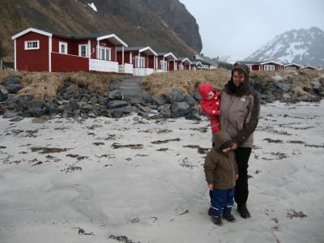
Kurzer Strandbesuch Der Sturm fegt Ida von den Füßen, so dass sie getragen werden muss, und Eric hält gar nichts von dem heftigen Wind und will lieber schnell wieder rein. Als es wieder zu regnen beginnt, springen wir ins Auto und fahren zunächst zur Rezeption. Wir bezahlen die 900 NOK und erfahren von der Campingplatzbetreiberin, dass das Wetter vollkommen untypisch für die Jahreszeit ist. Es müsste viel wärmer und sonniger sein, die Natur ist der Entwicklung noch zu weit hinterher. Schade, aber so müssen wir die Lofoten hinter uns lassen, denn bei dem Wetter haben wir keine Chance, irgendetwas zu machen, schon gar nicht mit den Kindern. Also folgen wir der E10 nach Osten. Ida hat sich mittlerweile darauf eingestellt, nach dem Losfahren einzuschlafen und für rund 2 Stunden im Auto zu schlafen, Eric vertreibt sich die Zeit dann mit Spielen, Reden und Schauen.
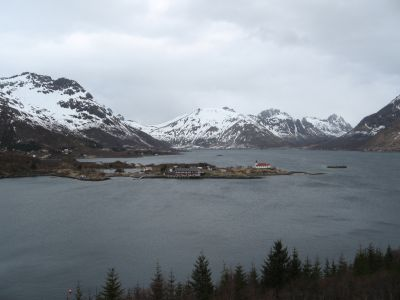
Spektakuläre Landschaft Die Landschaft ist immer noch spektakulär, der Wind pfeift uns um die Ohren, Schnee liegt noch bis an die Straße heran, aber irgendwann reißt auch der Himmel auf. Die Sonne kämpft sich durch und es wird sommerlich warm. In Bjerkvik kaufen wir ein und biegen dann von der E10 auf die E6 nach Norden ab. Der erste Campingplatz hat Ruhetag, also fahren wir weiter und halten beim Solbakken Camping, wo wir eine einfache Hütte für 350 NOK mieten. Die Betreiberin ist gerade beim Wegfahren, als wir ankommen. Sie kommt zurück, zeigt uns alles und wir nehmen die Hütte, weil die Kinder nach 6 Stunden Autofahrt einfach durch sind. Der Campingplatz liegt noch im Schnee und Winterschlaf, aber die Sonne brennt warm vom blauen Himmel und wir können ohne Jacken und Mützen draußen spazieren gehen. Es wird nicht mehr lange dauern, bis hier alles frei ist, wenn es weiter so schönes Wetter gibt. Unsere Hütte hat keine Heizung, so dass wir mit den beiden Kochplatten einheizen, was auch zügig geht. Man muss sich nur zu helfen wissen. Zum Abendessen gibt es heute Kartoffelpürree und Fischstäbchen mit Ketchup, ein Eric-Gericht! Nach dem Abendessen gehen wir mit den Kindern noch ein Stück spazieren und genießen den milden Abend. Eric wirft Steine in den Bach und ist nicht davon abzubringen, die Straße auch noch einmal bergab zu gehen und zu schauen, was der Bach dort macht. 16.5.2012 Bardu - TromsöEs ist saukalt in der Hütte, als wir aufwachen. Die fehlende Heizung macht sich doch bemerkbar. Wir machen erstmal wieder beide Herdplatten an, damit etwas Wärme aufziehen kann. Es ist sonnig, so dass wir uns für ein Frühstück auf unserer Terrasse entscheiden. Währenddessen laufen die Kinder in Matschhosen über die Schneeplatten und rutschen wegen der Gummistiefel regelmäßig aus, was zu Schreiattacken führt. Schnee ist halt kalt.
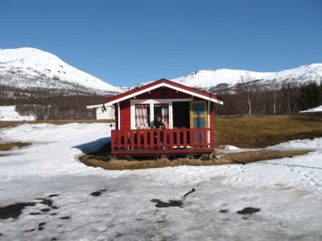
Frühstück im Schnee Nach dem Packen geht es dann wie immer gegen 10 Uhr los, Es geht weiter nach Norden auf der E6, die sich entgegen unserer Erwartungen nicht langweilig, sondern mit den schneebedeckten Gipfeln sehr schön präsentiert. Gegen halb eins erreichen wir Tromsö Campingplatz, wo wir eine Hütte für 950 NOK angedreht bekommen. Der Betreiber ist anscheinend nicht gewillt, uns die einfachste Kategorie zu geben, also beziehen wir ein 3-Raum-Häuschen mit eigenem Duschbad und Flachbildfernseher, leider ohne freies WLAN. Nach einem schnellen Mittagessen packen wir Ida in die Kraxe, Eric in die Karre und laufen zur Eismeerkathedrale, die sich auf der gleichen Seite wie der Campingplatz befindet. Danach laufen wir über die Brücke in die Innenstadt. Die Einkaufsstraße ist freundlich, viele Menschen sind unterwegs und der Ruf, Tromsö hätte Flair wegen der vielen Cafés etc. können wir nur bestätigen. Wir fühlen uns wohl hier.
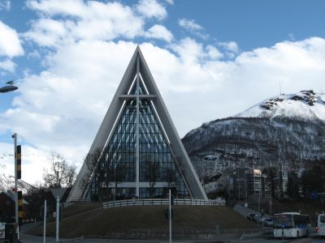
Eismeerkathedrale Der Besuch bei der Touristeninformation beschert uns den Fährfahrplan für die morgigen Fähren. Dazu will uns die nette Dame davon überzeugen, den 17.Mai in Tromsö zu verbringen, da der Nationalfeiertag besonders in dieser Stadt gefeiert würde. Schon gegen 7 Uhr morgens sollen die ersten Paraden stattfinden. Außerdem erfahren wir nun, warum wir auf unserer Reise quer durchs Land so viele Jugendliche in roten, blauen oder weißen wild verzierten Latzhosen angetroffen haben. Es sind die "Russen" , die kurz vor ihrem Examen stehen und so ihren Status anzeigen. Wir entscheiden uns, nach dem Aufbruch morgen das Auto stadtnah zu parken und uns das Spektakel anzuschauen, ehe wir uns auf unseren weiteren Weg gen Norden machen werden. Eine Zeitlang bleiben wir vor einem Einkaufszentrum in der Sonne sitzen, genießen die Wärme und schauen dem Treiben auf dem kleinen Platz zu. Dazu gibt es für jeden ein Eis, das mit 27 NOK pro Eis schon ziemlich teuer ist! Die Kinder spielen derweil auf einem Spielplatz vor dem Einkaufszentrum. Zurück am Campingplatz gibt es erstmal einen Kaffee, ehe es zum Abendbrot eine thailändische Kokosmilch-Gemüse-Reis-Pfanne gibt. Wir toben noch mit den Kindern, und sind dann doch froh, als sie gegen 21 Uhr endlich schlafen. Die Sonne steht noch immer ziemlich hoch am Himmel, was bei klarem Wetter noch mehr auffällt. 17.5.2012 Tromsö - StorslettNationalfeiertag in Norwegen! Wir räumen auf und fahren nach Tromsö rein, wo wir rechts von der Brücke neben Statoil auf einem sonst kostenpflichtigen Parkplatz parken. Wegen des Feiertags ist dieser heute kostenlos! Auf dem Parkplatz kommen wir mit einem norwegischen Ehepaar in Tracht ins Gespräch, die interessiert nachfragen, wo wir herkommen und was wir noch vorhaben. Der Mann erklärt schließlich, als er von unserem Plan, über Schweden zurückzufahren, hört: "Nordschweden ist sehr langweilig, aber die Menschen sind nett!"Zu Fuß geht es in die Fußgängerzone, und bei schönem Wetter strömen tausende Norweger in ihren Trachten oder besten Sonntagsanzug in die Stadt, und wir fühlen uns in unseren Trekkingklamotten etwas underdressed. Der Umzug wird von den Schulen gestaltet, d.h. die Schulklassen laufen in Trachten und mit unterschiedlich gestalteten Schildern durch die Fußgängerzone, zwischendrin lockern Musikzüge den Zug auf. Die Russen verkaufen an unterschiedlichen Ständen Zuckerwatten, Süßkram und Würstchen in Brot. Im Gegensatz zum Karneval in Deutschland ist alles gesittet, fast schon ruhig, nur hin und wieder lassen sich die Zuschauer von den Zugteilnehmern zu einem “Hürra!” hinreißen. Eric ist ein wenig enttäuscht, dass keine Bonbons geworfen werden. 
Nationalfeiertag in Tromsö Gegen halb eins verlassen wir Tromsö und fahren zur Fähre nach Breivikeidet, die um 13:25 Uhr fährt. Die Überfahrt dauert nur 20 Minuten, dafür haben wir nur eine halbe Stunde Zeit, die nächste Fähre zu erreichen, was aber auch problemlos klappt. Um 14.15 Uhr legt die andere Fähre pünktlich ab, und wir sind nur mit weiteren 6 Fahrzeugen unterwegs. Die Überfahrt dauert dieses Mal 40 Minuten. Nach Verlassen der Fähre treffen wir wieder auf die E6, auf der wir wegen eines weiteren Feiertagsumzugs kurz im Stau stehen. Heute fahren wir bis Storslett, wo wir auf dem “Fosselv Camping“ für 140 NOK zelten und noch mal für 60 NOK Wäsche waschen und trocknen können. Der Campingplatz liegt direkt an der E6, so dass wir bis ca. 22 Uhr das Gefühl haben, dass die Autos bzw. LKW direkt durchs Zelt fahren, aber danach ist endlich Ruhe, da kein Verkehr mehr unterwegs ist. Leider können wir die hiesige Attraktion den Fosselv Wasserfall nur vom Strand aus betrachten und nicht dorthin wandern, da der Weg noch komplett verschneit und vereist ist. Der Wasserfall sieht aber auch auf die Entfernung und im gefrorenen Zustand sehr imposant aus.
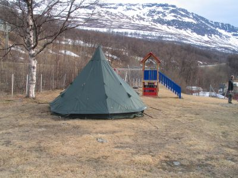
Fosselv Camping Zum Abendessen gibt es traditionell Nudeln mit Tomatensoße auf dem Trangia zubereitet. Gekocht und gegessen wird draußen mit Blick auf den wunderschönen Fjord. Da es zugig bzw. windiger wird und die Wolken grau und grauer werden, verziehen wir uns gegen 21 Uhr ins Zelt und packen uns in den Schlafsäcken ein. 18.5.2012 Storslett - HonnigsvägEs regnet leicht, als wir wach werden. Wir frühstücken im kleinen Gemeinschaftsraum, packen dann zusammen und bekommen von zwei Holländerinnen, die eine der Hütten gemietet haben, den Tipp, Hammerfest links liegen zu lassen, da es zu schmuddelig, klein und seit 1995 nicht mehr nördlichste Stadt der Welt sei, denn das sei Hönningsväg jetzt. Sie waren zwei Tage am Nordkap unterwegs und schwärmen vom Wetter und geben uns noch eine Adresse für eine günstige Unterkunft mit.Gegen 10 Uhr verlassen wir den Campingplatz mit Ziel Nordkap. Die Fahrt wird lang, und es regnet viel. In Alta kaufen wir ein, tanken noch mal und suchen einen Imbiss. Dann führt uns der Weg immer weiter gen Norden. Zeitweise herrscht dichter Nebel, dann wieder Regen.
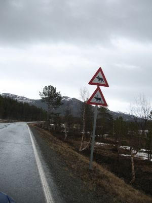
Hier gibt es Beides, Rentiere und Elche In Olderfjord biegen wir auf die E69 ab und passieren den Nordkaptunnel, der uns 192 NOK je Richtung kostet. Es gießt mittlerweile, und schließlich erreichen wir den im Reiseführer beschriebenen Campingplatz, wo wir nach einer Hütte fragen. Die Hütten für 590 NOK werden zur Zeit nicht vermietet, aber der Bungalow für 1000 NOK. Okay, dies wird unsere teuerste Unterkunft auf der Reise! Zwei Schlafzimmer, eigenes Duschbad, Wohnraum mit großen Fenstern und Küchenecke sind den Preis aber wert. Wir haben sogar gratis Internet. Dank der Polarnacht können wir die Kinder noch draußen durch die Gegend scheuchen, damit sie nach der langen Autofahrt irgendwie müde werden.
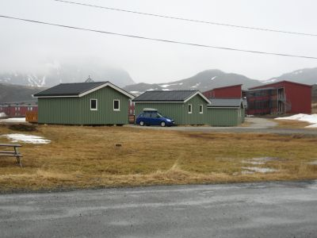
Bungalow beim Nordkap Camping Um 22 Uhr schlafen die Kinder endlich, und wir schauen, wie es nach dem Nordkap mit der Reise weitergehen soll. Dank Internet können wir schon mal ein wenig schauen, wie es in Schweden werden wird. 19.5.2012 Honningsväg - Nordkap - OlderfjordEric steht um 8 Uhr auf und weckt Ida und uns. Der Wind pfeift ums Haus und zwischendurch regnet es immer wieder. Dann starten wir die letzten 30 km zum Nordkap. Die Strasse windet sich in Kurven durch die einsame Landschaft. Am Himmel wechseln sich die Wolkenberge mit blauen Flecken ab, und als wir am Nordkapparkplatz ankommen, ist es 10.55 Uhr und die Mautstation nicht besetzt. Wir kommen kostenlos ans Nordkap. Unglaublich!Es windet so heftig, dass wir Angst um die Dachbox haben. Wir hocken uns hinter das Auto, und nutzen so den Windschutz, um Ida in die Kraxe zu setzen, während wir Eric fest an der Hand halten, da er durch den starken Wind hinzufallen droht. Dann hasten wir zur Nordkaphalle, wo wir kurz durchatmen. Durch die Halle hindurch gehen wir hinaus zum Globus, dem Nordkap-Wahrzeichen. Die Sturmböen sind so heftig, dass wir Eric am Sockel des Wahrzeichens in den Windschatten stellen müssen, und selbst wir Erwachsenen werden fast von den Füßen gerissen.
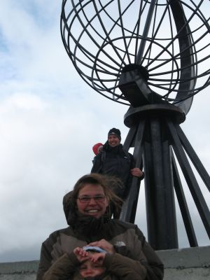
Am Nordkap Ein paar deutsche Angler, die gerade Fotos machen, sind so nett, uns auch abzulichten. Nach den ersten Erinnerungsfotos gehen wir wieder in die Nordkaphalle und trinken einen Kaffee und die Kinder bekommen einen dünnen Apfelsinensaft ... alles zusammen für 80 NOK. Zwischenzeitlich hat sich das Wetter zu unseren Gunsten gebessert. Kein Regen, sondern Sonne, die aus den dramatischen Wolken hervorlugt und schließlich Sieger über die Wolken wird! Wir spazieren noch einmal über das Nordkapgelände, schauen alles in Ruhe an und genießen, dass wir ganz allein hier unterwegs sind. Das Gefühl, das große Ziel erreicht zu haben, breitet sich warm in uns aus, und mit einem breiten Grinsen verabschieden wir uns von dem nördlichsten Punkt unserer Reise!
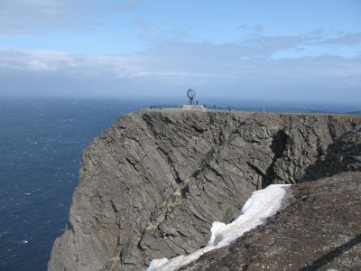
Nordkapfelsen Gegen 13 Uhr verlassen wir das Nordkap wieder. Auf dem Weg nach Süden schauen wir uns noch mal Skagsväg an, den Weg zum richtigen Nordkap, der verschneit und nicht begehbar ist, und halten noch mal am Campingplatz, um via Internet unseren Erfolg mitzuteilen. Das Hochgefühl, unser Ziel erreicht zu haben, schwindet nach und nach und wird von der Vorfreude auf Schweden abgelöst. Dann verlassen wir Magröya. Wir machen Rast an einer weitläufigen Bucht, wo ein Same nach seinen Rentieren Ausschau hält, und kommen mit ihm ins Gespräch. Eric wirft derweil Steine ins eiskalte Wasser und Ida übt das Kraxeln auf dem steinigen Untergrund. Dann geht es weiter nach Olderfjord, wo wir für 500 NOK eine einfache Hütte mieten. Zum Spazierengehen in der Sonne, mittlerweile ist es super schön geworden, Sonne und blauer Himmel, gönnen wir uns ein Eis im Kro. Danach kochen wir auf einem einflammigen Herd. Rückblickend sind unsere Tagesfahretappen in Norwegen zu lang gewesen und wirken wie eine Hauruckaktion, aber geplante Wanderungen und mehrtägige Aufenthalte oder Aktivitäten waren wegen des Wetters und der örtlichen Gegebenheiten einfach mit den Kindern nicht möglich. Norwegen hat sich zudem nicht so kinderfreundlich gezeigt, wie wir es erwartet hatten. ... weiter zum zweiten Teil ... LinksKristiansand Feriesenter Solvik Camping in Jørpeland Seim Camping in Røldal Lone Camping bei Bergen Campingplatz vor Trondheim Camping bei Steinkjer Camping in Mosjön Camping in Fauske Camping auf den Lofoten Solbakken Camping Fosselv Camping Camping in Kautokeino Skabram Camping in Jokkmokk Arvidsjaur Camping Strömsund Camping Vemdalens Camping Rucksack Hüttenvermietung Camping in Mora Glaskogen Camping Lenungshammar First Camp in Karlstad Camping am Vaenern Hagons Camping in Halmstad |